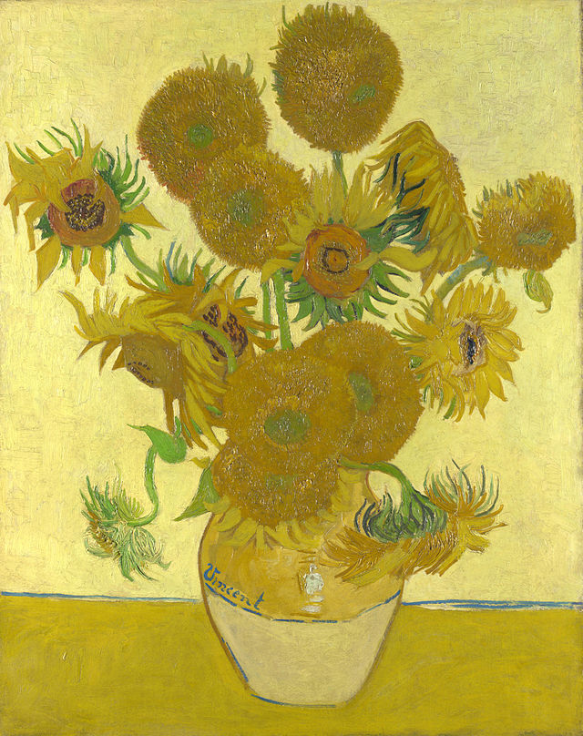

Творби

1.

2.

3.

4.
Винсент ван Гог
1853 - 1890
Винсент Вилем ван Гог е нидерландски художник, роден на 30 март 1853г. Той е второто дете в семейството след като мъртво се ражда мъртво и е трябвало да носи същото име. След това има двама братя и три сестри. Първоначално рисува цветя във вази поради липсата на пари за модели и излага картините си в парижко кафене. По – късно е привлечен от Дега и Моне. Твори и с Емиле Бернард.